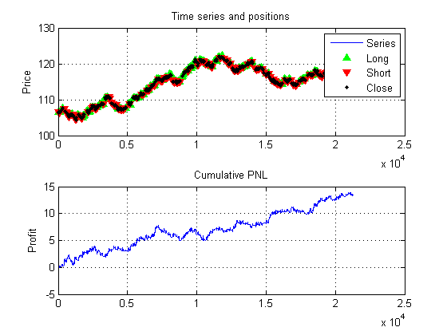
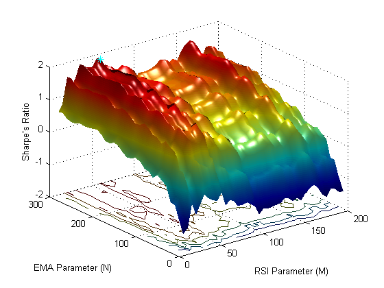
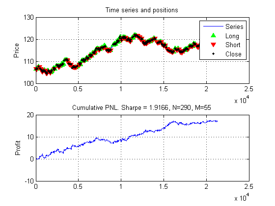
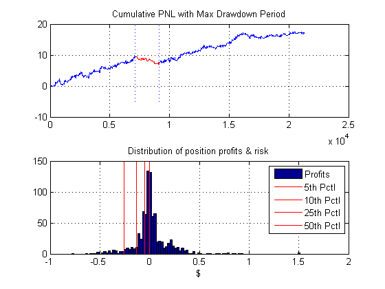

Backtest Moving Average RSI Combo Strategy
This script demonstrates testing a simple technical indicator strategy and backtesting to optimize its parameters
Contents
Data Import
Import data from database using auto-generated file. If the database is not installed, the data can instead be loaded from the MAT-file provided
try data = getBundData; catch load bund1min end
Sub-sample the series if necessary
step = 20; Close = data.Close(1:step:end);
Test MA+RSI Strategy
N = 200;
M = 50;
[sh pnl pos] = marisa(Close, N, M, 0.01);
posPNLPlot(Close, pos, pnl);
fprintf('Sharpe''s Ratio: %0.2f\n\n', sh * sqrt(60*11/step));
Sharpe's Ratio: 1.56
Run Backtest
Select a range of values for the EMA and RSI parameters for the strategy Run a parameter sweep and compute Sharpe's ratios
N = 10:10:300; M = 10:5:200; cost = .01; SH = zeros(length(N),length(M)); SHrow = zeros(1,length(M)); % loop over N,M tic; for i = 1:length(N) SHrow = zeros(1,length(M)); for j = 1:length(M) SHrow(j) = marisa(Close, N(i), M(j), cost); end SH(i,:) = SHrow; end toc SH = SH * sqrt(60*11/step);
Elapsed time is 4.804719 seconds.
Visualize Backtest Results
The Sharpe's ratios can be used to compare the performance of the strategy for different parameters. A 3D surface plot shows the relationship between the EMA, RSI parameters and the resultant Sharpe's ratio
clf surfc(M,N,SH); shading interp; lighting phong; light ylabel('EMA Parameter (N)'); xlabel('RSI Parameter (M)'); zlabel('Sharpe''s Ratio'); % Select Optimal Parameters [I,J] = find(SH == max(max(SH))); fprintf('\nOptimal Sharpe''s ratio of %0.2f was found for N = %d, M = %d\n', SH(I,J), N(I), M(J)); hold on; plot3(M(J), N(I), SH(I,J), 'c*', 'MarkerSize', 8) hold off;
Optimal Sharpe's ratio of 1.92 was found for N = 290, M = 55
Rerun strategy for optimal parameters
[sh, pnl, pos] = marisa(Close, N(I), M(J), cost); sh = sqrt(60*11/step) * sh; posPNLPlot(Close, pos, pnl); title(['Cumulative PNL. Sharpe = ',num2str(sh),', N=',num2str(N(I)),', M=',num2str(M(J))])
Analyze Strategy Returns
The Sharpe's ratio may not be sufficient information on the strategy. Here we extract individual positions and report on their statistics
cpnl = cumsum(pnl); [maxdd, period] = maxdrawdown(cpnl, 'arithmetic'); % Extract PNL for individual positions ind = find(diff(pos)) + 1; posPNL = diff([0;cpnl(ind)]); % Display Histogram of Position Returns histPNLPlot(cpnl, posPNL, period); fprintf('\nTotal number of positions = %d\n', length(posPNL)); fprintf('Average position duration = %0.2f periods\n', mean(diff(ind))); fprintf('Average profit per position = $%0.2f\n', mean(posPNL)); fprintf('Maximum Drawdown = $%0.2f\n\n', maxdd);
Total number of positions = 880 Average position duration = 24.14 periods Average profit per position = $0.02 Maximum Drawdown = $2.50